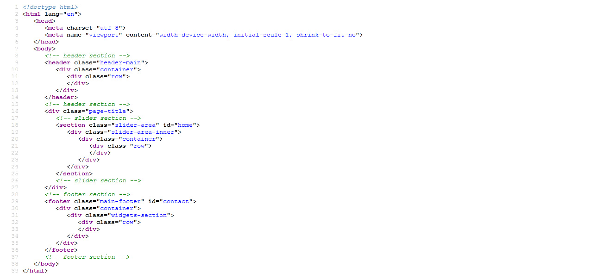

Created: 27/06/2022
Thank you for purchasing my template. If you have any questions that are beyond the scope of this help file
In order to install our template, simply put the following files in apropriate directory suggested as following.
An opening tag should appear first and a closing tag should appear at the bottom of the document. Every other bit of HTML should appear between those two tags. The head element is the first element to appear after the opening html tag. Here is the general structure.
If you would like to edit the color, font, or style of any elements in one of these columns, you would do the following:
.theme-title {
color: #00294b;
}
If you find that your new style is not overriding, it is most likely because of a specificity problem. Scroll down in your CSS file and make sure that there isn't a similar style that has more weight.
I.E.
body .theme-title {
color: #f94d1c;
}
So, to ensure that your new styles are applied, make sure that they carry enough "weight" and that there isn't a style lower in the CSS file that is being applied after yours.
I'm using two CSS files in this theme. The first one is a generic reset file. Many browser interpret the default behavior of html elements differently. By using a general reset CSS file, we can work round this. This file also contains some general styling, such as anchor tag colors, font-sizes, etc. Keep in mind, that these values might be overridden somewhere else in the file.
The second file contains all of the specific stylings for the page. The file is separated into sections using:
/* === Header Main === */ some code /* === Slider Box Area === */ some code /* === Our Service Area === */ some code some code /* === Furry Friend Area === */ some code some code /* === Pet Product Area === */ some code /* === Footer Main === */
If you would like to edit a specific section of the site, simply find the appropriate label in the CSS file, and then scroll down until you find the appropriate style that needs to be edited.
Any images that are placed within the blog section have 5px worth of padding and a light bluish background. If you would like to edit the display of these images, find the following section in the style sheet:
img {
display: block;
margin: 0px auto;
}
This theme imports three Javascript files.
This theme imports three Javascript files.
Once again, thank you so much for purchasing this template.